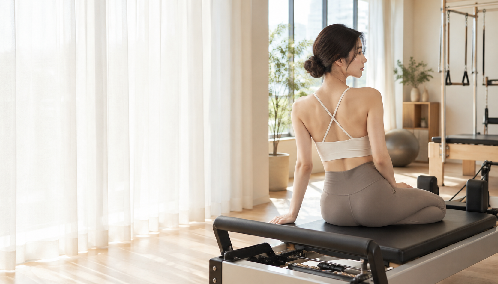

猫背で
姿勢が気になる
デスクワークで
つい前かがみになってしまう

Begin with a little time for you.
姿勢から、呼吸から、自分を整えて。
自分らしく軽やかな毎日へ。
女性専用・マシンピラティス 溜池山王駅 徒歩1分
整える。
巡る。
わたしらしく、
美しく。MayroPILATES STUDIO
デスクワークで
つい前かがみになってしまう
首・肩のこりや
見た目の印象が気になる
年齢とともに変わる
からだのラインが気になる
長時間の座り仕事で
腰が重く感じる
運動不足で
心も体も重く感じる
ピラティスは、ただ鍛えるだけではなく、
姿勢・呼吸・骨盤・体幹を整えながら、
しなやかに動ける身体へ導くメソッドです。

インナーマッスルから、
美しさはつくられる。
背骨を本来の位置へ導き、
美しい立ち姿へ。
身体の土台を整え、
ヒップラインや下半身を支える。
表面だけではなく、
内側からしなやかに支える。
深くなめらかな呼吸を整え、
心と身体をリラックス。
からだのつながりに着目し、内側から整えていくことで、身体の使い方を見つめ直します。
胸・肩・股関節まわりの
こわばりをほどく
使えていない体幹・お尻・
骨盤まわりを呼び起こす
呼吸とともに
全身を連動させる
日常の姿勢や歩き方まで
意識をつなげていく
胸がひらきやすい
自然な立ち姿へ。
肩まわりを整え、
呼吸しやすい身体へ。
骨盤と体幹の使い方で
身体を支える。
姿勢が変わると、
毎日が変わる。
身体の状態や感じ方には個人差があります。
心も身体も整う、Mayroならではの5つのポイント
マシンピラティスで
動きをサポート
女性のための
スタジオ
一人ひとりに合わせた
オーダーメイドレッスン
落ち着いた
心地よい空間
通いやすい
駅徒歩1分の立地
 A peaceful time
A peaceful time女性インストラクターが、
あなたの「なりたい」に寄り添います。
クラシックバレエ、客室乗務員の経験を経て、インストラクターとして活動しています。
自然光が差し込む、やさしく落ち着いた空間。
心からリラックスして、自分と向き合える時間を。

はじめての方でも安心。
かんたんな4ステップで、気軽にご体験いただけます。
Webから簡単に
ご予約いただけます。
お悩みや目標を
丁寧にヒアリング。
インストラクターが
やさしくサポート。
今後の通い方やプランを
ご案内します。
整えることで、
もっと好きなわたしに。